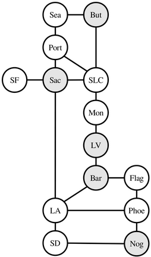
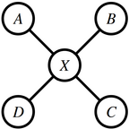
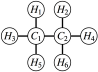
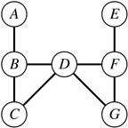

Assignment 3.2 Recursion to the Rescue!¶
Recursion is a powerful problem-solving tool with tons of practical applications. This assignment centers on two real-world recursion problems, each of which we think is interesting in its own right. By the time you’re done with this assignment, we think you’ll have a much deeper appreciation both for recursive problem solving and for what sorts of areas you can apply your newfound skills to.
There are three problems in this assignment. The first one is a warmup, and the next two are the main event.
Win Sum, Lose Sum: A warmup exercise with the
Optional<T>type.Shift Scheduling: How can a company assign shifts to workers to maximize profits? And should they?
Disaster Planning: Cities need to plan for natural disasters. Emergency supplies are expensive. What’s the cheapest way to prepare for an emergency?
You have plenty of time to work on this assignment if you make slow and steady progress. Here’s our recommended timetable:
Aim to complete Win Sum, Lose Sum, Take Two within one day of this assignment going out.
Aim to complete Shift Scheduling within three days of this assignment going out.
Aim to complete Disaster Planning within seven days of this assignment going out.
Starter Files¶
We provide a ZIP of the starter project. Download the zip, extract the files, and open the project in VS Code.
Part One: Win Sum, Lose Sum¶
As a refresher from lecture, an Optional<T> can either hold a single object of type T or the special constant Nothing. For example, here’s a sample function that looks returns the first character in a string that’s a letter, or Nothing if such a character doesn’t exist:
Optional<char> firstLetterOf(const string& str) {
for (char ch: str) {
if (isalpha(ch)) {
return ch;
}
}
return Nothing;
}
As you can see, you can seamlessly return a char from a function that returns an Optional<char>, and more generally you can usually initialize an Optional<T> with anything that would initialize an object of type T.
To see if there’s a value stored in an Optional<T>, you can compare it against Nothing. If the Optional doesn’t hold Nothing, you can use the .value() function to retrieve the underlying value. For example:
Optional<char> result = firstLetterOf(str);
if (result != Nothing) {
cout << "First letter is " << result.value() << endl;
} else {
cout << "String has no letters." << endl
}
Now, onto the task for this part of the assignment. Last section handout features a problem entitled “Win Sum, Lose Sum.” The goal in that problem is to write a function that takes in a set of numbers and a target number, then returns whether there’s a way to pick a subset of the numbers that adds up to the target. For example, given the set {1, 3, 4} and the target number 5, we could select the subset {1, 4}. However, given that same set and the target number 2, there are no solutions.
To help you get accustomed to the Optional type, we’d like you to write a function
Optional<Set<int>> makeTarget(const Set<int>& elems, int target);
that takes as input a Set<int> and a target number, then returns a subset of elems that adds up to target. If no such set exists, you should return Nothing.
While normally we are perfectly comfortable with you writing helper functions, for the purposes of this warm-up assignment, you must not use any helper functions. This means that you cannot make makeTarget a wrapper around another recursive function. Since you also (as usual) can’t change what the parameters to makeTarget are, this constraint will require you to think a bit more about how your recursive logic will work. We invite you to look over the recursive functions from our last lecture on recursion for inspiration.
You are welcome to read over the solution code from last week’s section problems and use it as an inspiration / reference for your solution. After all, the purpose of this exercise is to get you comfortable reading, writing, and adjusting recursive solutions to change the structure of how they return their answers.
We’ve provided a series of test cases for you for this problem, but they are not exhaustive. You’ll need to write at least one test case of your own, which will hopefully give you a bit more practice working with the Optional type.
To summarize, here’s what you need to do:
Win Sum, Lose Sum Requirements
Implement the
makeTargetfunction inWinSumLoseSum.cpp. You may not edit the parameters to themakeTargetfunction, nor are you allowed to use any helper functions.Add at least one
STUDENT_TESTtoWinSomeLoseSumTest.cpp.Test your code by using the “Run Tests” button at the top of the program window.
Some notes on this problem:
If there are many sets that add up to the target, you can return any one of them.
The integers in
elemsmay be positive, zero, or negative.
Part Two: Shift Scheduling¶
You’re in charge of a small business and have just hired a new part-time employee with flexible hours to help out. You have a set of shifts that the worker could potentially cover, and you need to decide which shifts she should take. There are two restrictions to how you can schedule the worker. First, the worker has a maximum number of hours they’re willing to work, and you cannot assign the worker more hours than this. Second, you cannot assign two overlapping shifts to the worker. (As great a hire as she was, she can only be in one place at one time.)
It turns out that with these two restrictions, there can be a lot of different schedules you could assign to the worker. For example, imagine that your new employee is available for twenty hours each week. There’s a variety of tasks she could do, each of which has different shifts. Here’s the different shifts she could take:
Mon 8AM - 12PMMon 12PM - 4PMMon 4PM - 8PMMon 8AM - 2PMMon 2PM - 8PMTue 8AM - 12PMTue 12PM - 4PMTue 4PM - 8PMTue 8AM - 2PMTue 2PM - 8PMWed 8AM - 12PMWed 12PM - 4PMWed 4PM - 8PMWed 8AM - 2PMWed 2PM - 8PM
One schedule would be to assign the Monday 8AM - 12PM shift, the Monday 12PM - 4PM shift, the Monday 4PM - 8PM shift, and the Tuesday 8AM - 2PM shifts to your worker. She would then work a total of 18 hours. Another option would be to have her work Tuesday 8AM - 2PM, Tuesday 2PM - 8PM, Wednesday 12PM - 4PM, and Wednesday 4PM - 8PM for a total of 20 hours. A lighter option would be to assign the worker the Monday 12PM - 4PM slot and nothing else, giving her only four total hours. Or you could not assign her any shifts at all, giving her zero total hours.
However, you cannot assign both the Monday 8AM - 12PM and Monday 8AM - 2PM slots, because those slots overlap one another. You also cannot assign the Monday 8AM - 2PM, Monday 2PM - 8PM, Tuesday 8AM - 2PM, and Tuesday 2PM - 8PM slots, since that would be a total of 24 hours, exceedng the 20 hour cap.
It turns out that with 20 free hours and the time slots listed above, there are 1,044 possible schedules that you could assign your worker. That’s quite a lot! This problem explores the challenges, both technical and ethical, in looking over all these options to find the “best” schedule for the worker.
Milestone One: Count Schedules¶
Your first task is to write a function
int numSchedulesFor(const Set<Shift>& shifts, int maxHours);
that takes as input the set of all possible shifts and the maximum number of hours your employee is allowed to work, then returns the number of possible schedules for the worker that don’t exceed maxHours hours. A schedule is not required to use up all maxHours hours and cannot contain two shifts that overlap with one another.
You might notice that this function uses the Shift type, a custom type representing a shift the worker can take. You can ask questions about Shifts by using these helper functions:
int lengthOf(const Shift& shift); // Returns the length of a shift.
bool overlapsWith(const Shift& one, // Returns whether two shifts overlap.
const Shift& two);
For example:
if (overlapsWith(shiftOne, shiftTwo)) {
cout << "Shift has length " << lengthOf(shiftOne) << endl;
}
Now, let’s talk strategy. We recommend approaching this problem in the following way. Select, however you’d like, some shift out of shifts. If the employee can’t take this shift, either because it overlaps with a shift she’s already been assigned or because it would exceed her total hour limit, then the only option is to not give the employee that shift. Otherwise, there are two options: you could either give the employee the shift, or not give the employee the shift. Recursively explore both options, counting up how many schedules are possible on each branch.
As you’re working on this one, make sure to test thoroughly! If you have forty or so shifts to pick from, it’ll be extremely difficult to determine whether your code finds the correct total by eyeballing the answer. Instead, craft smaller examples (say, with between zero and five shifts) and see how your code does. Think of all the tricksy cases that might arise and make sure your code handles those cases well. We’ve included some tests for you to use when you’re getting started, and there’s at least one case we know of that we didn’t test for. As usual, you’ll need to add at least one custom test case of your own.
To summarize, here’s what you need to do.
Milestone One Requirements
Implement the
numSchedulesForfunction inShiftScheduling.cpp.Add at least one custom
STUDENT_TESTfornumSchedulesFortoShiftScheduling.cpp.Test your code thoroughly using the provided tests and the tests that you yourself authored.
Some hints on this problem:
Feel free to write helper functions, to make your
numSchedulesForfunction a wrapper function, etc.It’s fine if the worker has zero available hours – that just means that she’s really busy that week – but if
maxHoursis negative you should callerror()to report an error.A worker’s schedule does not necessarily need to use up all the available hours. For example, the schedule of “don’t assign any shifts at all to the worker” is a perfectly legal schedule, as is “just take one shift” even if the worker could potentially take more than that.
You might be tempted to solve this problem by making a container of all possible schedules, then returning the size of that container. However, you should avoid this strategy because it will not run very quickly; the overhead of writing down all possible schedules is large. Instead, just keep track of how many there are.
Another strategy to avoid is generating all possible subsets of shifts, then filtering those down just to the ones that don’t exceed the time limit and that don’t have conflicting shifts. This will also be too slow to be practical. Often, the overwhelming majority of those subsets will not be feasible, and your code will spent a lot of unnecessary time generating options that won’t be able to work.
Milestone Two: Find the Maximum-Profit Schedule¶
(We do not recommend starting this milestone until you have the previous milestone working correctly, since the code here builds on the function you implemented earlier.)
You now have a recursive function that counts the number of possible schedules there are. As the employee’s manager, you need to choose which shifts the worker will actually pick.
Let’s suppose that, for each shift, you have an estimate of how much profit/loss the company would make by assigning the worker to that shift. You would like to assign the worker the schedule that, across all possible feasible schedules, maximizes the amount of profit the company makes. For example, suppose that you have these dollar estimates of profit/loss for each of the above shifts:
Mon 8AM - 12PM:$27Mon 12PM - 4PM:$28Mon 4PM - 8PM:$25Mon 8AM - 2PM:$39Mon 2PM - 8PM:$31Tue 8AM - 12PM:$7Tue 12PM - 4PM:$7Tue 4PM - 8PM:$11Tue 8AM - 2PM:$10Tue 2PM - 8PM:$8Wed 8AM - 12PM:$10Wed 12PM - 4PM:$11Wed 4PM - 8PM:$13Wed 8AM - 2PM:$19Wed 2PM - 8PM:$25
So, when should she come in to work? You might be eyeing the high-value Monday 8:00AM - 2:00PM and 2:00PM - 8:00PM time slots. That would bring in a full 70 dollars, using up twelve of her permitted twenty hours. You might then have her spend her remaining eight hours Wednesday afternoon in the 12:00PM - 4:00PM and 4:00PM - 8:00PM shifts, netting you another 24 dollars for a total take-home of $94.
With a little creativity, though, you might note that you actually would make more if instead of having her work eight hours on Wednesday in two four-hour time slots, you instead had her work six hours from 2:00PM - 8:00PM and bring in 25 dollars, simultaneously upping your total take-home to $95 and giving her two free hours.
Even this isn’t optimal - as enticing as those 39- and 31-dollar time slots on Monday are, it’s actually better to have your employee work the three four-hour shifts on Monday, bringing in 27, 28, and 25 dollars, respectively, for a total of 80 dollars on Monday. Overall, if you pick the three four-hour shifts on Monday and the closing six-hour shift on Wednesday, your new hire is bringing in $105 and clocking in only eighteen hours, below the twenty-hour limit.
Write a function
Set<Shift> maxProfitSchedule(const Set<Shift>& shifts, int maxHours);
that takes as input a Set of all the possible shifts, along with the maximum number of hours the employee is allowed to work for, then returns which shifts the employee should take in order to generate the maximum amount of profit for the company. You can determine the profit or loss associated with a particular shift by calling the function
int profitFor(const Shift& shift); // Returns the profit earned by a shift
For example:
if (profitFor(shift) >= 137) {
cout << "Great - a shift that earns at least $137 profit!" << endl;
}
The recursive code you wrote in Milestone One will be a great starting point as you work through this one. The main difference between this function and the one from before is that instead of adding up how many schedules can be made when you include or exclude a given shift, this time you’ll look at the best schedule you can make when you include or exclude a shift, then return whichever option is better.
This is a great place to write custom test cases to exercise various unusual cases and make sure your approach works correctly. To that end, please write at least one custom STUDENT_TEST to check whether your implementation of maxProfitSchedule is correct.
To recap, here’s what you need to do.
Milestone Two Requirements
Implement the
maxProfitSchedulefunction inShiftScheduling.cppAdd at least one custom
STUDENT_TESTformaxProfitScheduletoShiftScheduling.cpp, and ideally add more than that.Test your code thoroughly.
Some notes on this problem:
If multiple schedules are tied for producing the most value, you’re free to choose any of them.
The best schedule might not use up all of the employee’s available hours.
The values assigned to shifts can be arbitrary. It might be the case that a shift from 2PM to 4PM produces 10 dollars while another from 10AM to 6PM the same day produces -4 dollars (a loss).
You shouldn’t need to use the
Vector’ssortfunction, thePriorityQueuetype, or any other sorting-based solutions here.
Milestone Three: Explore and Evaluate¶
You’ve just created a program capable of determing the maximum-profit schedule for a particular worker. We’d now like you to think about the consequences of deploying such a system, and how those consequences result from implicit assumptions built into the program’s design.
Your code is designed to purely optimize a single quantity - the amount of revenue generated by the employee - and doesn’t take anything else into account. For example, in the absence of conflicts with other shifts, your code sees no difference between these two shifts:
Tue 6AM - 11AM: $7Tue 10AM - 3PM: $7
Although (again, in the absence of conflicts) your code considers these shifts equivalent, they would mean very different things for an employee who needs to get up at 4:30AM and commute for an hour to get to work or arrange to send kids to school on Tuesday mornings. On the other hand, some folks enjoy the peace and quiet of getting up early in the morning, plus the benefits of commuting off peak hours when there’s much less traffic. An employee like that might actually find the first shift preferable to the second, and would be happier and more productive taking it.
Here’s another example where your code treats disparate schedules equally. Consider the following options of shifts to assign to a worker:
Mon 8AM - 2PM:\(7 and `Tue 8AM - 2PM`: \)7Wed 8AM - 8PM:$14
Again, assuming no conflicts with other shifts, your algorithm considers these options completely interchangeable. However, workers with different preferences might react to these differently. An employee with a medical accommodation might physically not be able to work for twelve hours straight, but would be happy with two six-hour shifts. Another employee might opt to do a full 12-hour shift one day to open up another day in their week, either to relax, to take care of chores, because they’re a part-time student, etc.
In each of the above cases, if your algorithm were to tiebreak between two schedules of equal profit, it might select a schedule that is insensitive to an employee’s needs. Your code isn’t malicious; it’s oblivious to surrounding context and reduces complex situations and preferences to homogeneous quantities.
Answer the following questions in ShortAnswers.txt:
Question 1
We’ve just described two ways in which your scheduling algorithm ignores factors that would be relevant to a real human being: morning vs evening times, and fewer long shifts vs multiple shorter shifts. However, these are not the only important factors that your code does not consider. Give another example of two set of shifts and a hypothetical worker where
absent conflicts with other shifts, your algorithm would treat the two sets of shifts identically;
the employee has a strong, compelling reason not to take one of the two sets of shifts; and
the employee would be comfortable taking the other set of shifts.
Then, reflect on the costs (monetary, physical, emotional, etc.) the worker would bear if they were required to take set of shifts they want to avoid. What would the worker need to do to mitigate those costs? Your answer should be 6 - 8 sentences in length.
Question 2
Up to this point, we’ve been focusing on the harms to the employee. Yet assigning shifts this way can harm the company as well. What costs might the company bear if it assigns shifts automatically in a way that does not consider employee preferences? Be specific. Your answer should be 4 - 6 sentences in length.
Question 3
In light of the harms you identified in Q1 and Q2, outline four factors beyond profit that the optimization algorithm should take into account when assigning shifts. Briefly explain each factor. Your answer should be 4 - 6 sentences in length.
The code you’ve written is designed to assign a schedule for a single worker at a small company. However, systems similar to yours are regularly used to assign work to thousands of employees on a weekly or even daily basis. The code might be used to assign different shifts to baristas at coffee shops each week, to designate the number of packages a delivery person needs to send every day, or to allocate passengers to drivers on ride-hailing platforms every second. In each case, these systems focus on optimizing some particular set of quantities, ignoring factors that are not immediately available to the system or easily quantifiable. These systems operate at a much larger scale than yours, making the above effects far more pronounced.
As an example, in 2014, the New York Times ran a story describing how several large employers (Walmart, Starbucks, etc.) had begun using optimization algorithms to assign shifts to workers. Each week, employees would be told what shifts they would be covering in the upcoming week, with shifts assigned based on forecasted need. This meant that workers could not predict their schedules in advance, leading to challenges in attending college classes, obtaining part-time work, securing childcare, establishing routines for young children, etc.
Answer the following question in the file ShortAnswers.txt.
Question 4
Imagine you are a software engineer tasked with writing a profit-maximizing shift scheduler. Based on your answers to the previous problems, write a memo to your manager explaining the likely harms of doing so – both to the workers and to the company – and propose a few ways the shift scheduling system could be modified or properly used to address those harms. We encourage you to think broadly here and to consider options beyond merely integrating the factors you identified in Q3. How could the scheduling system be changed to be more responsive to worker circumstances while also helping the company run more efficiently? Your answer should be 5 - 10 sentences in length.
Part Three: Disaster Planning¶
Disasters – natural and unnatural – are inevitable, and cities need to be prepared to respond to them. The problem is that stockpiling emergency resources can be really, really expensive. As a result, it’s reasonable to have only a few cities stockpile emergency supplies, with the plan that they’d send those resources from wherever they’re stockpiled to where they’re needed when an emergency happens. The challenge with doing this is to figure out where to put resources so that (1) we don’t spend too much money stockpiling more than we need, and (2) we don’t leave any cities too far away from emergency supplies.
Imagine that you have access to a country’s major highway networks and know which cities are right down the highway from others. Below is a fragment of the US Interstate Highway System for the Western US.

Network of cities.¶
Suppose we put emergency supplies in Sacramento, Butte, Nogales, Las Vegas, and Barstow (shown in gray). In that case, if there’s an emergency in any city, that city either already has emergency supplies or is immediately adjacent to a city that does. For example, any emergency in Nogales would be covered, since Nogales already has emergency supplies. San Francisco could be covered by supplies from Sacramento, Salt Lake City is covered by both Sacramento and Butte, and Barstow is covered both by itself and by Las Vegas.
Although it’s possible to drive from Sacramento to San Diego, for the purposes of this problem the emergency supplies stockpiled in Sacramento wouldn’t provide coverage to San Diego, since they aren’t immediately adjacent. More generally, we’ll say that a country is disaster-ready if every city either already has emergency supplies or is immediately down the highway from a city that has them.
Your task is to write a function
Optional<Set<string>>
placeEmergencySupplies(const Map<string, Set<string>>& roadNetwork,
int numCities);
that takes as input a Map representing the road network for a region (described below) and the number of cities you can afford to put supplies in, then returns a set of at most numCities cities that, if supplied, makes the country disaster ready. If it’s not possible to do so, this function should return Nothing.
In this problem, the road network is represented as a map where each key is a city and each value is a set of cities that are immediately down the highway from them. For example, here’s a fragment of the map you’d get from the above transportation network:
"Sacramento": {"San Francisco", "Portland", "Salt Lake City", "Los Angeles"}
"San Francisco": {"Sacramento"}
"Portland": {"Seattle", "Sacramento", "Salt Lake City"}
You might be tempted to solve this problem by approaching it as a combinations problem. We need to choose some group of cities, and there’s a limit to how many we can pick, so we could just list all combinations of numCities cities and see if any of them provide coverage to the entire network. The problem with this approach is that as the number of cities rises, the number of possible combinations can get way out of hand. For example, in a network with 35 cities, there are 3,247,943,160 possible combinations of 15 cities to choose from. Searching over all of those options can take a very, very long time, and if you were to approach this problem this way, you’d likely find your program grinding to a crawl on many transportation grids.
To speed things up, we’ll need to be a bit more clever about how we approach this problem. There’s a specific insight we’d like you to use that focuses the recursive search more intelligently and, therefore, reduces the overall search time.
Here’s the idea. Suppose you pick some city that currently does not have disaster coverage. You’re ultimately going to need to provide disaster coverage to that city, and there are only two possible ways to do it: you could stockpile supplies in that city itself, or you can stockpile supplies in one of its neighbors. For example, consider this scenario:

A, B, C, D are all adjacent to X¶
Suppose city X isn’t yet covered, and we want to provide coverage to it. To do so, we’d have to put supplies in either X itself or in one of A, B, C, or D. If we don’t put supplies it at least one of these cities, there’s no way X will be covered.
With that in mind, use the following strategy to solve this problem. Pick an uncovered city, then try out each possible way of supplying that city (either by stockpiling in that city itself or by stockpiling in a neighboring city). If after committing to any of those decisions you’re then able to cover all the remaining cities, fantastic! You’re done. If, however, none of those decisions ultimately leads to total coverage, then there’s no way to supply all the cities.
In summary, here’s what you need to do:
Disaster Planning Requirements
Add at least one custom test case to
DisasterPlanning.cpp. This is a great way to confirm that you understand what the function you’ll be writing is supposed to do.Implement the
placeEmergencySuppliesfunction inDisasterPlanning.cppusing the recursive strategy outlined above. Specifically, do the following:Choose a city that hasn’t yet been covered.
For each way it could be covered – either by stockpiling supplies in that city or by stockpiling in one of its neighbors – try providing coverage that way. If you can then (recursively) cover all cities having made that choice, great! If not, that option didn’t work, so you should pick another one.
If
numCitiesis negative, your code should use theerror()function to report an error.Test your code thoroughly using our provided test driver. Once you’re certain your code works – and no sooner – run the demo app to see your code in action. (More on that later.)
Some notes on this problem:
You are welcome to make
placeEmergencySuppliesa wrapper function. (That’s what our solution does!) As a hint, you’ll need to be able to track, at each point in time, which cities are still uncovered. Perhaps that would be good information to tell the recursive function?Do not make changes to the
roadNetworkparameter. You may be tempted to make changes to the road network when solving this problem, since, after all, it’s common in a recursive function to reduce the size of the input. For this problem in particular, though, we do not recommend doing that. First, doing so is tricky - it’s easy to accidentally leave unintentional references to cities in theMapunless you’re careful to remove them all. Second, you may need to place supplies in a city that is already covered by another city (think about this - can you come up with a transportation network where that’s the case?), and so if you remove cities from the road network you might prevent your recursive logic from finding a solution.The road network is bidirectional. If there’s a road from city \(A\) to city \(B\) then there will always be a road back from city \(B\) to city \(A\). Both roads will be present in the parameter
roadNetwork. You can rely on this.A common bug to watch out for: when working with sets, the operation
set1 -= set2andset1 += set2are not opposites of one another. For example, supposeset1 = {1, 2, 3}andset2 = {2, 3, 4}. After writingset1 -= set2, you’ll haveset1 = {1}. If you then writeset1 += set2, you’ll haveset1 = {1, 2, 3, 4}, which isn’t what you began with.Every city appears as a key in the map. Cities can exist that aren’t adjacent to any other cities in the transportation network. If that happens, the city will be represented by a key in the map associated with an empty set of adjacent cities.
Feel free to use set.
first()or map.firstKey()to get a single element or key from aSetorMap, respectively.The
numCitiesparameter denotes the maximum number of cities you’re allowed to stockpile in. It’s okay if you use fewer thannumCitiescities to cover everything, but you can’t use more.The
numCitiesparameter may be zero, but should not be negative. If it is negative, callerror().Get out a pencil and paper when debugging this one and draw pictures that show what your code is doing as it runs. Step through your code in the debugger to see what your recursion is doing. Make sure that the execution of the code mirrors the high-level algorithm described above. Can you see your code picking an uncovered city? Can you see it trying out all ways of providing coverage to that city?
Make sure you’re correctly able to tell which cities are and are not covered at each point. One of the most common mistakes we’ve seen people make in solving this problem is to accidentally mark a city as uncovered that actually is covered, usually when backtracking. Use the debugger to inspect which cities are and are not covered at each point in time.
There are cases where the best way to cover an uncovered city is to stockpile in a city that’s already covered. In the example shown below, which is modeled after the molecular structure of ethane, the best way to provide coverage to all cities is to pick the two central cities \(C_1\) and \(C_2\) even though after choosing \(C_1\) you’ll find that \(C_2\) is already covered.

C1 is adjacent to H1, H3, H5 and C2. C2 is adjacent to C1, H2, H6, and H4.¶
You might be tempted to solve this problem by repeatedly taking the city adjacent to the greatest number of uncovered cities and then stock- piling there, repeating until all cities are covered. Surprisingly, this approach will not always work. In the example shown to below here, which we’ve entitled “Don’t be Greedy,” the optimal solution is to stockpile in cities B and F. If, on the other hand, you begin by grabbing city D, which would provide coverage to five of the seven cities, you will need to stockpile in at least two more cities (one of A and B, and one of E and F) to provide coverage to everyone. If you follow the re- cursive strategy outlined above, you won’t need to worry about this, since that solution won’t always grab the city with the greatest number of neighbors first.

Once you’re sure that your code works, choose the “Disaster Planning” option from the main menu. The bundled demo will let you run your code out on some realistic data sets. It makes multiple calls to your recursive function to find the minimum number of cities needed to provide coverage. Play around with the sample transportation grids provided – find anything interesting?
A note: some of the sample files that we’ve included have a lot of cities in them. The samples whose names start with VeryHard are, unsurprisingly, very hard tests that may require some time for your code to solve. It’s okay if your program takes a long time (say, at most two minutes) to answer queries for those transportation grids, though the other samples shouldn’t take very long to complete.
(Optional) Part Four: Extensions!¶
As always, if you want to go above and beyond what we’re asking for here, we’ll award extra credit for your efforts. As usual, if you do submit extensions, please submit two versions of your .cpp files: a base version meeting the requirements set out here, plus a second version that contains the extensions (say, in a file with a name like ShiftSchedulingExtended.cpp or something like that).
You can do whatever you’d like as extensions. Here’s some suggestions to help you get started:
Shift Scheduling: The current version of shift scheduling assumes you’re scheduling a single worker’s shifts. What if you have to schedule shifts for multiple workers? Come up with a system that allocates shifts this way, then put together a writeup explaining how your system works and how it strikes a balance between company and worker preferences.
Disaster Planning: Are there any other maps worth exploring? Feel free to create and submit a map of your own! You can add a new map file into the
res/directory by creating a file with the.dstsuffix. Use the existing.dstfiles as a reference. We’d love to expand our map collection by adding your creations into future quarters!There are a number of underlying assumptions in this problem. We’re assuming that there will only be a disaster in a single city at a time, that the road network won’t be disrupted, and that there’s only a single class of emergency supplies. What happens if those assumptions are violated? For example, what if there’s a major earthquake in the Cascadia Subduction Zone, striking both Portland and Seattle (with some aftereffects in Sacramento) and disrupting I-5 up north? What if you need to stockpile blankets, food, and water separately, and each city can only store one?
You may have noticed that the
VeryHardSouthernUSsample takes a long time to solve, and that’s because while the approach we’ve suggested for solving this problem is much better than literally trying all combinations of cities, it still has room for improvement. See if you can speed things up! Here’s a simple idea to get you started: instead of picking an arbitrary uncovered city at each point in the recursion, what if you pick the uncovered city with the fewest neighbors? Those are the hardest cities to cover, so handling them first can really improve performance.
Submission Instructions¶
Before you call it done, run through our submit checklist to be sure all your ts are crossed and is are dotted. Make sure your code follows our style guide. Then upload your completed files for grading.
Please submit only the files you edited; for this assignment, these files will be:
WinSumLoseSum.cppShiftScheduling.cppShortAnswers.txt(don’t forget this one!)DisasterPlanning.cpp
You don’t need to submit any of the other files in the project folder.